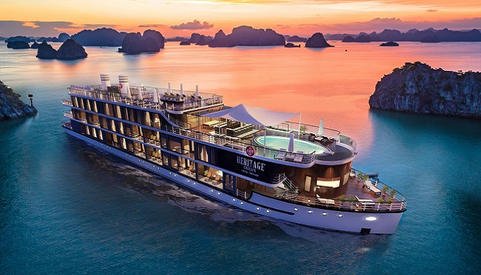
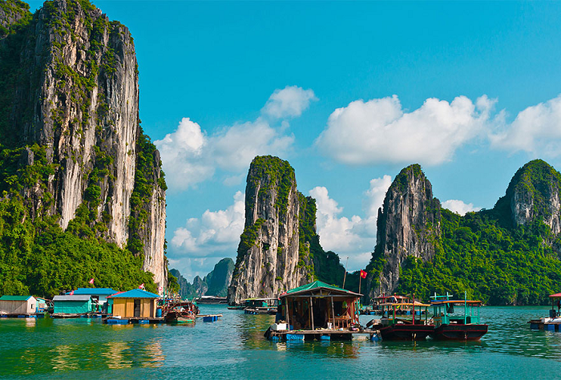

Giới thiệu tổng quát về Hạ Long
Vịnh Hạ Long là một trong những kỳ quan thiên nhiên nổi tiếng nhất của Việt Nam, nằm ở vùng Đông Bắc, thuộc tỉnh Quảng Ninh. Với diện tích khoảng 1.553 km², vịnh bao gồm hơn 1.600 hòn đảo lớn nhỏ, phần lớn là đảo đá vôi không có người ở.
Năm 1994, Vịnh Hạ Long được UNESCO công nhận là Di sản Thiên nhiên Thế giới lần đầu tiên với giá trị thẩm mỹ. Năm 2000, vịnh tiếp tục được công nhận lần thứ hai về giá trị địa chất - địa mạo. Đến năm 2011, Hạ Long được bình chọn là một trong bảy kỳ quan thiên nhiên mới của thế giới.
Thông tin nổi bật:
- Vị trí: Vịnh Bắc Bộ, tỉnh Quảng Ninh, Việt Nam
- Di sản UNESCO: 1994, 2000
- Kỳ quan thế giới: 7 kỳ quan thiên nhiên mới (2011)

Địa chất độc đáo
Các đảo đá vôi với hình thù đa dạng, hang động kỳ vĩ được hình thành qua hàng triệu năm.
Hệ sinh thái đa dạng
Vùng biển với hệ sinh thái rừng ngập mặn, rạn san hô, thảm cỏ biển phong phú.
Di sản văn hóa
Nơi lưu giữ dấu tích của nền văn hóa Hạ Long cổ xưa cách đây hàng nghìn năm.
Du lịch nổi tiếng
Điểm đến hàng đầu Việt Nam với nhiều hoạt động du lịch hấp dẫn trên vịnh.
Trải nghiệm không thể bỏ lỡ

Du thuyền trên vịnh
Tham gia các tour du thuyền qua đêm để chiêm ngưỡng trọn vẹn vẻ đẹp của vịnh.

Khám phá hang động
Thám hiểm các hang động nổi tiếng như Hang Sửng Sốt, Hang Đầu Gỗ, Hang Luồn.

Tham quan làng chài
Ghé thăm các làng chài nổi truyền thống, tìm hiểu cuộc sống của ngư dân địa phương.